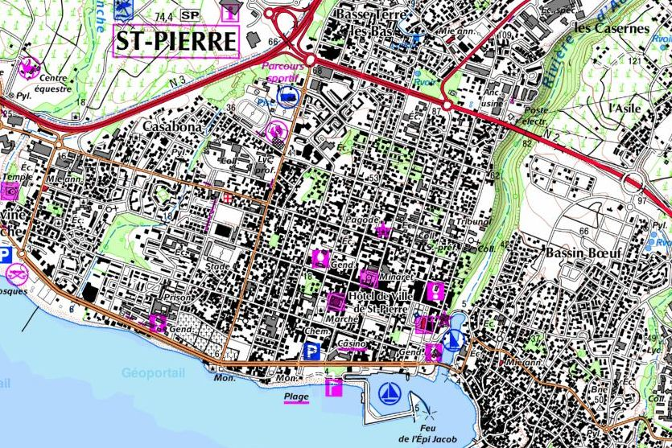
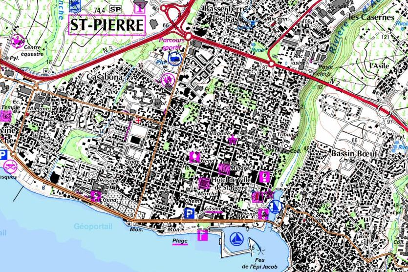
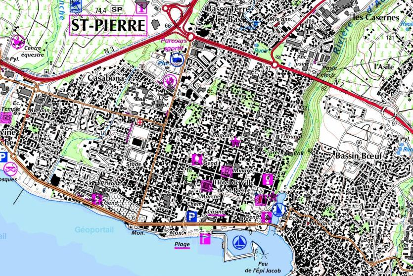

ZOMBIE DICE
survivez, si vous pouvez! vous incarnerai des joueurs dans les rue de st pierre a commencement de l'Apocalypse... les premiers bateau et avion contaminés sont arrivés au Port et a St Denis... bonne chance les amis!
Si vous ne faites pas d’échec critique, en toute logique vous devriez trouver sur cette page différentes idées de scenario , délire imaginatif et autre idée de concepts pour vous lancer dans une soirée JDR amusez vous, et bonne pêche. PS : Vous pouvez contribuer en ajoutant vous aussi une nouvelle section , qui sera etudier puis validé par un membre du staff si elle respecte les conditions d’usage.

survivez, si vous pouvez! vous incarnerai des joueurs dans les rue de st pierre a commencement de l'Apocalypse... les premiers bateau et avion contaminés sont arrivés au Port et a St Denis... bonne chance les amis!

Warhammer est un jeu de rôle et de stratégie se déroulant dans un univers sombre et fantastique. Les joueurs incarnent des héros ou des créatures maléfiques, naviguant dans un monde déchiré par la guerre et la magie. Offrant une grande liberté d'action, les joueurs influencent l'histoire et l'évolution de leur personnage. Le jeu est également associé à des figurines pour des batailles épiques à l'échelle miniature.